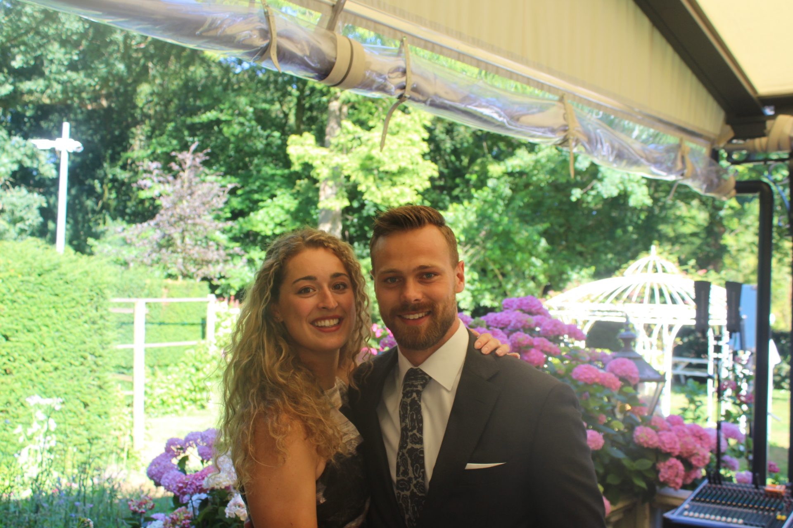

Opsommingen
In deze paragraaf gaan we van start met de opdracht.
Drie dingen die ik mooi vind:
- Mijn Vrouw
- Mijn Huis
- Vergezichten in de natuur
- Mijn Vrouw
- Mijn Huis
- Vergezichten in de natuur
Nu het volgende gedeelte van de opdracht
We houden het lekker overzichtelijk. Betekent wel veel regels, maar dat is niet zo erg.
Een afbeelding van mijn prachtige vrouw en ik :)
De foto is wat aan de grote kant zie ik, eens kijken of we kunnen resizen met behulp van de autoscale van HTML.
